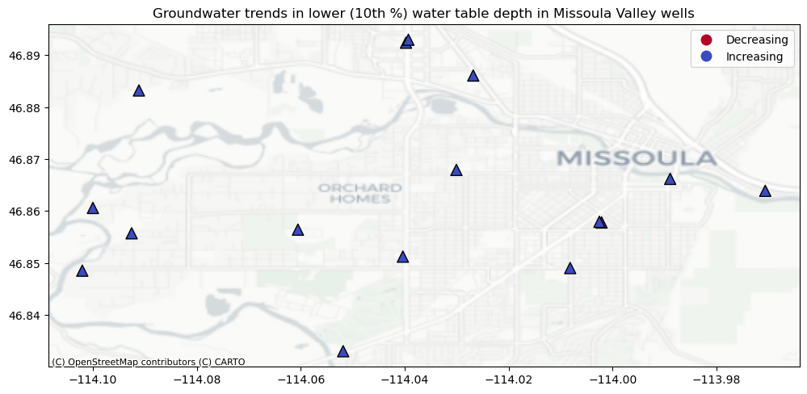
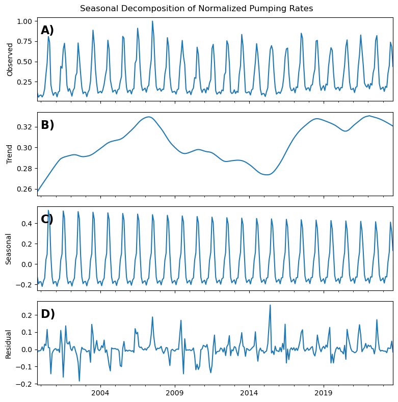
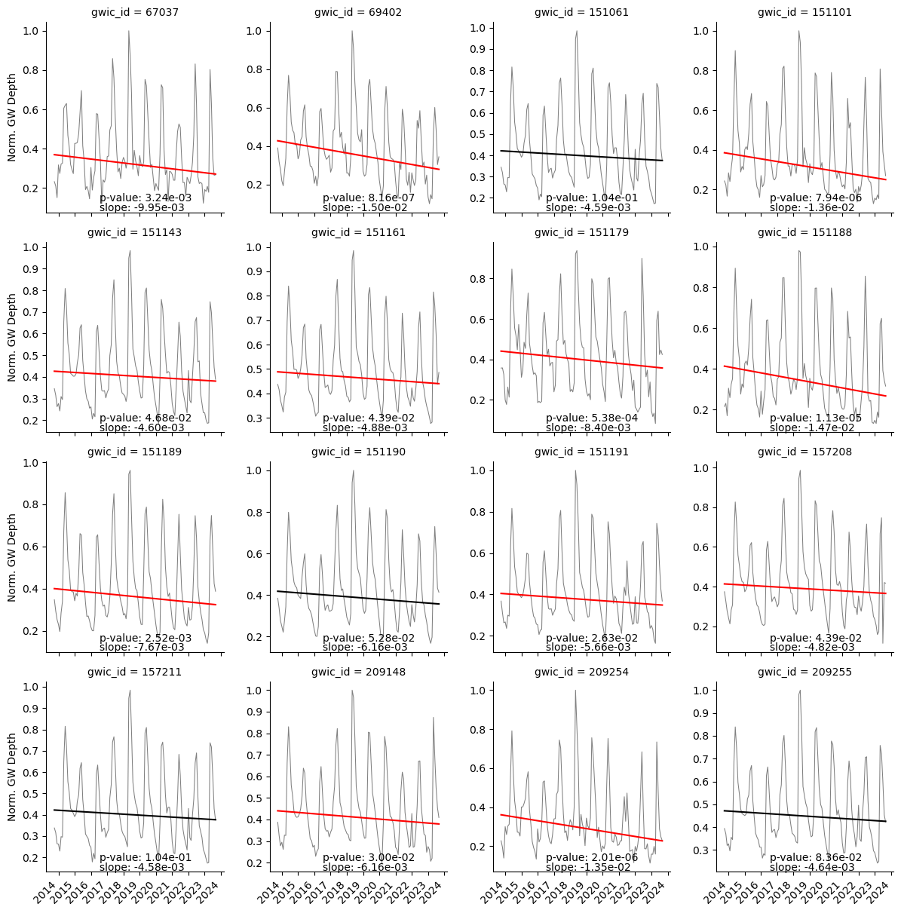

Missoula Aquifer Sustainability Study
Methods
Study Area
The study area includes the greater Missoula area. Within this region there are 16 monitoring wells used in the analysis Figure 1.

Data Imputation
Historical groundwater measurements from the 16 sites were taken sporadically and inconsistently (Figure 2). Therefore, in order to compare across all sites we needed to fill the data gaps and resample to monthly average values. We gap-filled the data using a mulitple linear regression imputation method based on the Clark Fork River monthly average flow and the day of the year (i.e. last day of the month) to create consistent monthly data across all water years (2000-2023) in each monitoring well used in the study. We tested several other methods including linear interpolation, time-based interpolation, and seasonal trend decomposition using LOESS (STL) by iterating the method 100 times and leaving out 5 known data points to later predict with the model. The multiple linear regression data imputation method proved to have the best error statistics across the all metrics (MAE, MSE, RMSE, MAPE, and R-squared).
Historical Analysis
Clark Fork River
The Clark Fork River serves as the main source for aquifer recharge in the Missoula Valley (Tallman 2005). While other inputs exist, we focus almost exclusively on the Clark Fork due to the overall magnitude relative to other inputs, and the high temporal correlation with one another that all the inputs exhibit [CITE Johnnie analysis]. A seasonal decomposition using LOESS (Figure 3) shows that there has been a consistent increasing trend in monthly average flows over the study period (2000-2023). In addition, as expected, there is a strong seasonality component with peak flows coming in late spring and baseflows in late summer and early fall.

We investigate the trend further using a Mann-Kendall test (Mann (1945), Kendall (1975)), which avoids assumptions of normality and independence. The results indicate a statistically significant (\(p<0.5\)) increasing trend of 24 cfs/month. We further break down the trend analysis into seasons: winter (December, January, February), spring (March, April, May), summer (June, July, August), and fall (September, October, November) (Figure 4). All four seasons have increasing trends, although the summer season’s trend is not statistically significant at the \(p<0.5\) level.

Groundwater Table Depth
We evaluated trends in groundwater table depth for each of the 16 wells within the study site using the Mann-Kendall test. All 16 wells have significantly increasing trends and strong seasonality similar to the Clark Fork River streamflow (Figure 5).

Additionally, we calculated the 10th, 50th, and 90th quantile regression lines to show trends in lower, median, and upper values, respectively (Figure 6). The results show strong increasing trends in the upper quantile of each well, suggesting that increases in peak recharge events are largely driving the overall trend in the groundwater. Median and lower quantiles show less of an increasing trend and sometimes even decreasing trends. The decreasing trends in the lower quantiles tend to located in the south and west regions the study site (Figure 7). The difference in trends between the 90th and 10th percentile also suggest an overall increase in interannual variability throughout the time period.


Groundwater Withdrawals
To understand the relationship and timing of groundwater levels, Clark Fork streamflow, and Missoula City pumping rates, we normalize all monthly values to be between zero and one (Figure 8). We average the normalized groundwater depths across all wells to get one groundwater signal to compare to river flows and pumping rates. The signals are remarkably aligned in their seasonality. Of course, groundwater is a dependent variable, but river flows and pumping rate are independent. Essentially, the City is increasing their pumping at the same time streamflow, and thus groundwater, are at their maximum. This is an opportunitistic situation and one that should be monitored closely if streamflow timing were to shift due to changes in snowpack runoff, as projected by climate change studies (Whitlock et al. 2017). The main difference in these three signals is the lagged decrease in groundwater levels in comparison to the river and pumping rate. Groundwater tends to drop much slower than the two independent variables, suggesting there is some storage effect in the unconfined aquifer.

Similar to the Clark Fork river flows and groundwater level, the City pumping rate also has an overall increasing trend and strong seasonality over the study time period (Figure 9). While the overall trend is increasing, there are three smaller trends that are distinct across the time period. From 2000 to 2007 the pumping rate increases, then from 2007 to 2015 the pumping rate decreases, followed by another strong increasing trend from 2015 to 2023.

The most recent 9 years provide an interesting case study. Over this time period, pumping rates have strongly increased and river flows have remained around the same (slight increase), yet the groundwater levels from the majority of the wells has either decreased or is no longer statistically significant (Figure 10). This suggests that there are other factors influencing groundwater levels, most likely groundwater withdrawals.

In order to understand how withdrawals may be impacting groundwater levels over the entire time period, we remove the normalized trend in river flow from the ground water signal at all wells (Figure 11). Once the river flow trend is removed, changes in groundwater depth are shifted from increasing to decreasing in 14 of the 16 wells. This suggests that if the river flows were not increasing over this time period, groundwater trends would likely be decreasing. Thus, the river is masking the decreasing trends in groundwater and given that there is no evidence for an increasing trend in river flow to continue into the future, it is important to consider what can be done now to minimize these underlying changes in groundwater level.

Summary
References
Kendall, Maurice George. 1975. “Rank Correlation Methods.”
Mann, Henry B. 1945. “Nonparametric Tests Against Trend.” Econometrica: Journal of the Econometric Society, 245–59. https://www.jstor.org/stable/1907187.
Tallman, Amelia. 2005. “Sources of Water Captured by Municipal Supply Wells in a Highly Conductive Aquifer Western Montana.” Graduate Student Theses, Dissertations, & Professional Papers, January.
Whitlock, Cathy, Wyatt F Cross, Bruce D Maxwell, Nick Silverman, and Alisa A Wade. 2017. “2017 Montana Climate Assessment: Stakeholder Driven, Science Informed,” September, 1–269. https://doi.org/10.15788/M2WW8W.